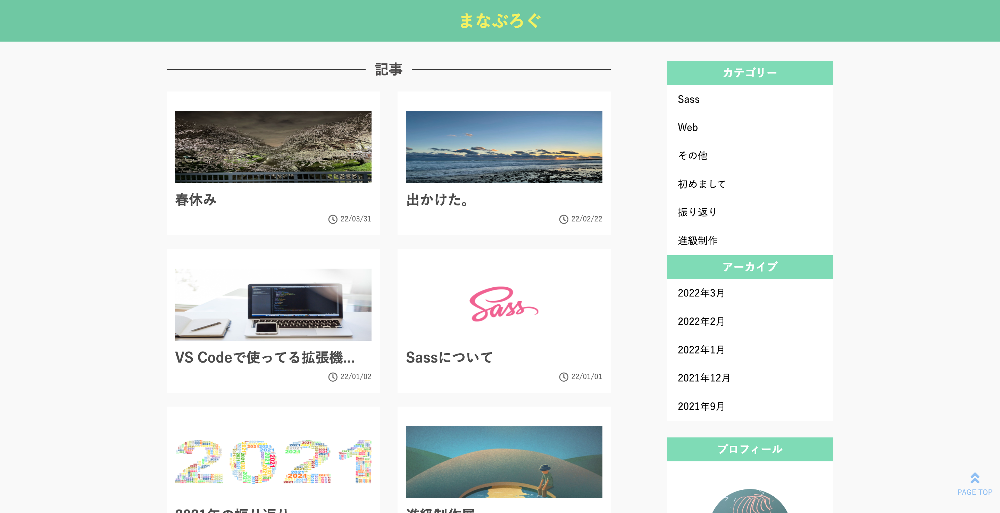

work
blog
2021
1年生の後期に制作をしたブログです。 自分の好きな色の緑を使い、x初のweb上に後悔をした 作品で見やすさを重視して制作を進めていきました。

デザイン
自分の好きな緑色を使用しました。
pcでは見やすいよう2列に並べ、スマホではスマートに縦一列に
しました。サイドバーは下に設置をしました。右下にはtopに素早く戻れる
ようにプラグインを使用し、取り込みました。
使用ツール
- ・Visual Stadio Code: VSCdeを使い制作をしました。
- ・HTML: 1つ1つの間隔を綺麗に見えるように工夫をしました。
- ・CSS: メッセージが大きく見やすいようにしたりコードが綺麗に見えるように工夫しました。
- ・WordPress: WordPressで記事投稿がしやすいようにしています。
- ・PHP: 自分のテーマを使用するためにPHPを使用しました。
まとめ
初の作品作りで難しいところが多々あり、 仕様書通りに行っていないところもありますが自分が楽しんで納得のいく blogページを制作できて良かったと思います。この楽しんで制作する気持ちを忘れずに 頑張っていきたいと思うことができました。

まなぶろぐを開く
※ 現在メンテナンス中です。